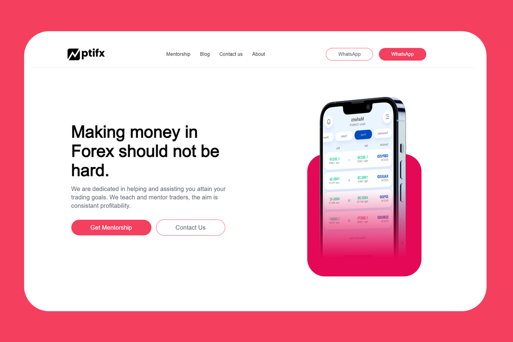

Hi! Kwanele Gamedze here,
Building foundcoder.com. Intersted in all-things Software Engineering. A strong advocate for simplicity and perfomance. Apart from programming, I spend most of my time reading and writting, mostly about programming and other ideas of interest.
Everything about me.
Checkout my about page
What I am doing now.
Visit my now page
Here are my recent posts
See all postsMy recent projects
-
 Found Coder website
Found Coder website
A website where developer can market themselves.
-

Pti Forex websiteA website for a forex educational platform.
-
Meals Off website
A simple website with popular recipes and instructions.